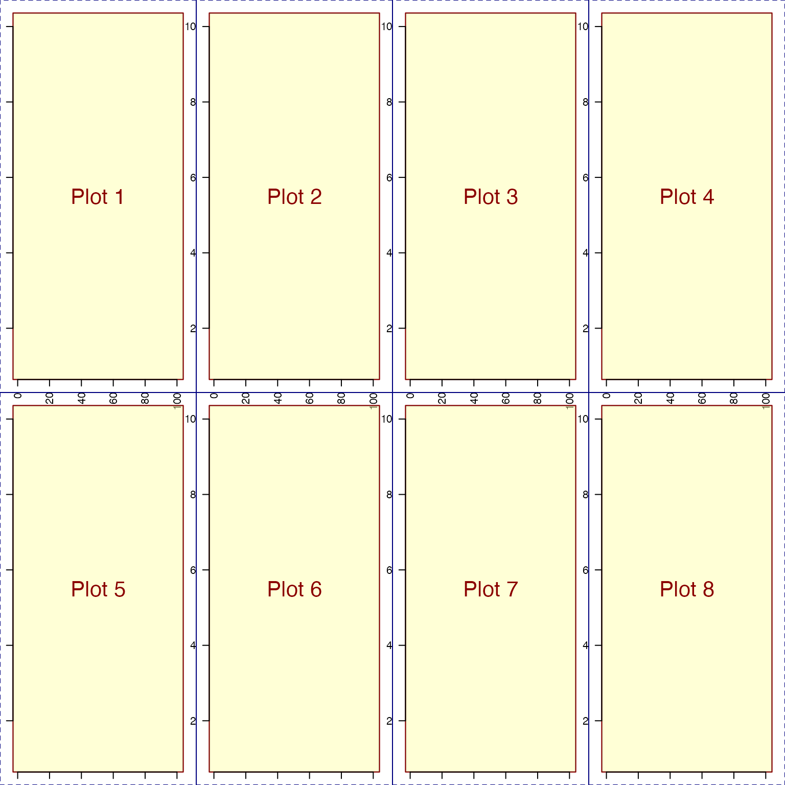

Get aspect ratio for coordinates, plot, or device
Arguments
- type
charactertype of aspect ratio to calculate.- "coords"
calculates plot coordinate aspect ratio, which is helpful for creating proper circular shapes, for example, where the x-axis and y-axis ranges are very different. Note that this calculation does also correct for margin sizes.
- "plot"
calculates plot aspect ratio, based upon the actual size of the plot, independent of the numeric coordinate range of the plot. This aspect ratio reflects the relative visual height and width of the plot area, ignoring margins.
- "device"
calculates plot aspect ratio, based upon the complete graphical device, i.e. the full space including all panels, margins, and plot areas.
- parUsr, parPin, parDin
numericvalues equivalent to their respectivegraphics::par()output, fromgraphics::par("usr"),graphics::par("pin"), andgraphics::par("din"). Values can be supplied directly, which among other things, prevents opening a graphical device if one is not already opened. Any call tographics::par()will otherwise cause a graphic device to be opened, which may not be desired on a headless R server.- ...
additional parameters are ignored.
See also
Other jam plot functions:
adjustAxisLabelMargins(),
coordPresets(),
decideMfrow(),
drawLabels(),
groupedAxis(),
imageByColors(),
imageDefault(),
minorLogTicksAxis(),
nullPlot(),
plotPolygonDensity(),
plotRidges(),
plotSmoothScatter(),
shadowText(),
shadowText_options(),
showColors(),
sqrtAxis(),
usrBox()
Examples
withr::with_par(list("mfrow"=c(2, 4), "mar"=c(1, 1, 1, 1)), {
for (i in 1:8) {
nullPlot(plotAreaTitle=paste("Plot", i), xlim=c(1,100), ylim=c(1,10),
doMargins=FALSE);
graphics::axis(1, las=2);
graphics::axis(2, las=2);
}
# device aspect inside the 2x4 layout
getPlotAspect("plot");
})

#> [1] 0.4592089
# device aspect outside the 2x4 layout
getPlotAspect("plot");
#> [1] 1.116279